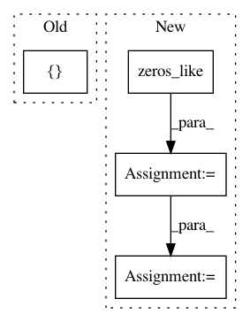

5a9e9622a7309794cc0cf511080fc2bd6b73a20a,deepctr/layers/sequence.py,SequenceMultiplyLayer,call,#SequenceMultiplyLayer#Any#Any#,756
Before Change
mask = tf.transpose(mask, (0, 2, 1))
embedding_size = key_input.shape[-1]
mask = tf.tile(mask, [1, 1, embedding_size])
key_input *= mask
if len(tf.shape(value_input)) == 2:
value_input = tf.expand_dims(value_input, axis=2)
After Change
if self.weight_normalization:
paddings = tf.ones_like(value_input) * (-2 ** 32 + 1)
else:
paddings = tf.zeros_like(value_input)
value_input = tf.where(mask, value_input, paddings)
if self.weight_normalization:
value_input = softmax(value_input,dim=1)
In pattern: SUPERPATTERN
Frequency: 3
Non-data size: 4
Instances
Project Name: shenweichen/DeepCTR
Commit Name: 5a9e9622a7309794cc0cf511080fc2bd6b73a20a
Time: 2019-11-06
Author: wcshen1994@163.com
File Name: deepctr/layers/sequence.py
Class Name: SequenceMultiplyLayer
Method Name: call
Project Name: keras-team/keras
Commit Name: c1a72b36444c8027c27c2dc02dc03d5b69a5e389
Time: 2016-10-13
Author: jeanmichel.arbona@gmail.com
File Name: keras/layers/recurrent_convolutional.py
Class Name: LSTMConv2D
Method Name: get_constants
Project Name: keras-team/keras
Commit Name: 9efe17aeeafc6d8c1406a48f82fc63731d4b2b6c
Time: 2016-02-29
Author: francois.chollet@gmail.com
File Name: keras/layers/recurrent.py
Class Name: Recurrent
Method Name: get_initial_states